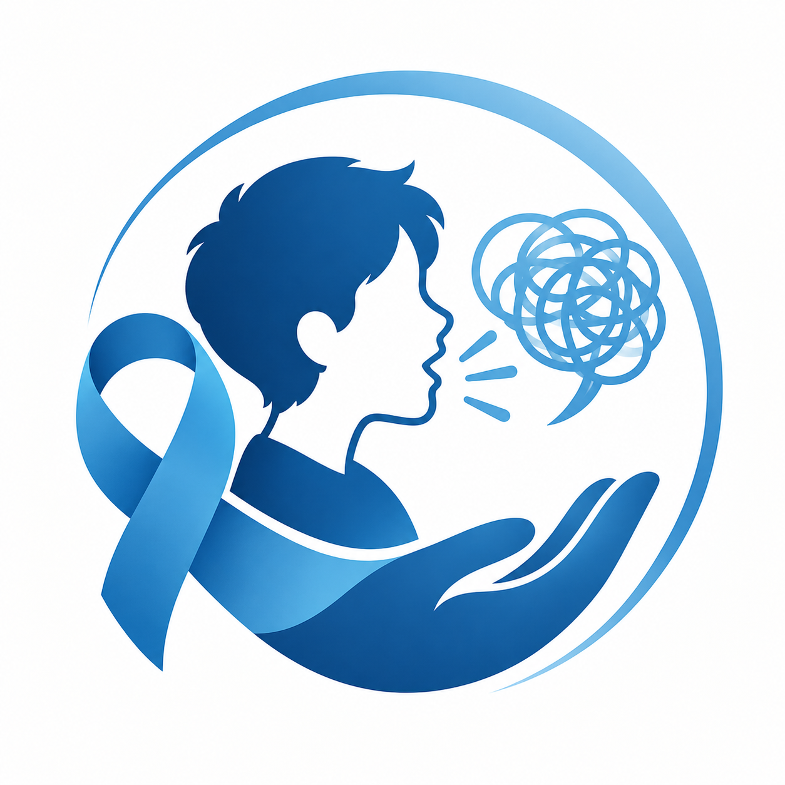

Önyargısız yaklaş
Kekemeliği kişiliğin ya da zekânın göstergesi olarak görme.

HER SES DEĞERLİDİRKekemelik, söylenecek sözlerin değerini azaltmaz. Birbirimizi anlamak için bazen tek gereken şey, sabırla dinlemektir.
İnsanların kelimelerini değil,
anlatmak istediklerini dinle.
Kekemelik, konuşmanın akışında tekrarlar, uzatmalar veya duraksamalarla kendini gösterebilir. Her insanın deneyimi farklıdır; bu deneyim kişinin düşüncelerinin, duygularının ya da söylemek istediklerinin önüne geçmemelidir.
22 Ekim, kekemelik hakkında doğru bilgi edinmek, önyargıları azaltmak ve herkesin kendini rahatça ifade edebildiği bir iletişim kültürünü desteklemek için bir fırsattır.
Kekemeliği kişiliğin ya da zekânın göstergesi olarak görme.
Cümleleri tamamlama; konuşan kişinin kendi ritmini korumasına izin ver.
Konuşma biçimine değil, anlatılan mesaja odaklan.
İhtiyaçlarını sormaktan ve destekleyici olmaktan çekinme.
Bir insanın sesini duymak,
ona kendisi olabileceği alanı açmaktır.
Destek olmak için uzman olman gerekmez. Anlayışlı ve sabırlı bir dinleyici olmak bile iletişimi daha güvenli hâle getirebilir.
Konuşmasını bitirmesi için ihtiyaç duyduğu zamanı tanı.
Yardım etmek istesen bile, önce kişinin kendi sözlerini bulmasına fırsat ver.
Yargılamadan dinle ve konuşmanın içeriğine ilgi göster.
Herkesin iletişim biçiminin kendine özgü olduğunu hatırla.
Not: Kekemelik deneyimi kişiden kişiye değişir. En iyi yaklaşım, kişinin tercihlerini dinlemek ve nasıl desteklenmek istediğini sormaktır.